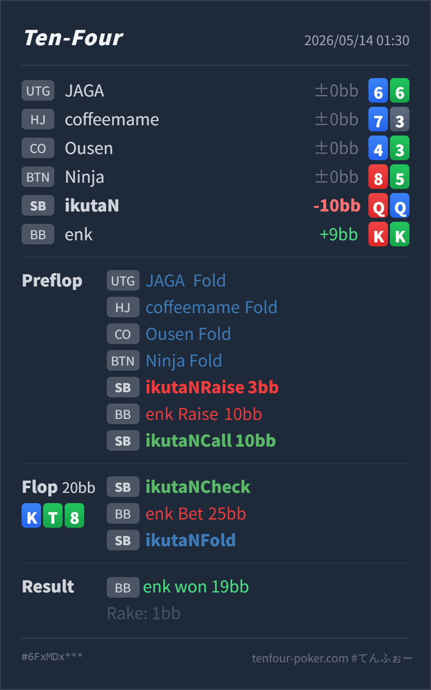

T4 HAND REVIEW
SB Q♥Q♦ の blind vs blind 3bet call / K-high flop fold レビュー
GTO基準ではSBの Q♥Q♦ はBBの3betに対してかなり強い続行ハンドで、preflopはcallだけでなく4betを高頻度で検討したい場面です。flopの K♦ T♣ 8♣ で大きく打たれた後のfoldは自然ですが、主な改善点はflopではなく、preflopでQQをどのレンジに入れるかです。
Hero: SB
Q♥ Q♦Villain: BB
K♥ K♣Board:
K♦ T♣ 8♣- 主要論点: SB open後、BBの
10BB3betにQ♥Q♦をcallで止めてよいか。その後、K-high flopでoverbetを受けてfoldできるか。 - GTO基準の総評:
Q♥Q♦はblind vs blind（SB対BB）ではかなり上位です。深さ不明なら断定は避けますが、標準的には4bet寄りで、callに寄せすぎるとA/K-high flopで判断が難しくなります。 - 次回の判断基準: QQで3betをcallするなら、KやAが落ちたflopで大きく打たれた時点のfold計画までセットにします。迷う相手ならpreflopで4betし、主導権とSPRを整理します。
- 5枚役確認: Flop時点のHeroは
Q♥ Q♦ K♦ T♣ 8♣のone pairです。Villainは実際にはK♥ K♣ K♦ T♣ 8♣のthree of a kindで、Heroは大きく負けています。
ハンド要約
- Hero
- SB
Q♥ Q♦ - Villain
- BB
K♥ K♣ - 形式
- T4 6MAX Cash
- Preflop
- UTG fold, HJ fold, CO fold, BTN fold, SB Hero raise
3BB, BB Villain raise10BB, SB Hero call10BB - Board
K♦ T♣ 8♣- Flop
- Pot
20BB, SB Hero check, BB Villain bet25BB, SB Hero fold - Result
- BB Villain won
19BB, rake1BB

判断のズレ
| 論点 | その場で置いた見立て | どこがズレやすいか | 次回の基準 |
|---|---|---|---|
| preflop 3bet対応 | QQなのでcallしてflopを見る | SB対BBのQQはかなり強く、BBの3betレンジに対してvalue 4bet候補です。callだけにすると、OOPでA/K-high boardを受ける頻度が高くなります。 | QQは4bet寄り。深い・相手が極端にtightなどの理由がある時だけcallを混ぜる |
| flop check | 3bet potでKが落ちたので様子を見る | OOPなのでcheck自体は自然です。問題は、preflopでcallした以上、このK-high boardにどの頻度で耐えるかを先に考えておく必要があります。 | K-highではcheckから相手サイズを見る。小さめには一部call、大きめにはかなり降りる |
| flop overbetへのfold | QQを降りるのは弱すぎるかもしれない | K♦ T♣ 8♣ はBBのAK/KK/TT/KQsを強く含み、HeroのQQはclubもなく、改善が薄いです。大きいbetには無理に守りません。 | pot超えサイズにはQQはfoldでよい。特にclubなしは続行しすぎない |
ストリート別レビュー
| ストリート | その時点の見え方 | 実ハンドの位置づけ | 評価 | その場の一手 |
|---|---|---|---|---|
| Preflop | BTNまでfoldで回り、SBからBBへopenした場面です。BBが 10BB まで3betしています。 | Q♥Q♦ はSBのopen rangeでもかなり上位で、BBの3betに対してvalueで押し返せるハンドです。 | やや消極的 | callも完全なミスではありませんが、基本は4bet寄りに扱います。特に相手がBBから広く3betするなら、QQは強く取り切る側です。 |
Flop K♦ T♣ 8♣ | BBの3bet rangeにはAK/KK/TT/KQsがあり、K-highかつclub drawもあるため、BB側が強くbetしやすいboardです。 | HeroはQQのone pairで、Kに負けています。clubを持っておらず、Q以外の明確な改善も少ないです。 | checkは自然、foldは良い | checkで問題ありません。25BB into 20BB の大きいbetには、QQを無理にcallしない方が安定します。 |
持ち帰り
- 今回のfold自体は悪くありません。K-highの3bet potで、clubなしQQがpot超えサイズを受けたらかなり苦しいです。
- 主な改善点はpreflopです。SB対BBのQQは強すぎるので、3betに対して受け身のcallだけにせず、4betの主力候補として扱います。
- QQをcallレンジに残す場合は、flopでA/Kが落ちた時の継続基準を先に決めます。小さいbetには一部守れますが、大きいbetには潔くfoldします。
- 相手がBBから極端にtightにしか3betしない根拠があるなら、QQのcall寄せも許容されます。ただしunknownでは、QQを守りすぎるよりpreflopでvalueを取りに行く方が実戦的です。
exploit 補足
- 実戦のVillainは
K♥K♣で、preflop 3bet後にtop setを作って大きくbetしています。この相手のこの一手だけからrange全体を決める必要はありませんが、結果としてflop foldは損失を限定できています。 - BBの3betがKK+/AKに寄りすぎる相手なら、preflopで4betしても相手の続行が強くなりすぎるため、QQの扱いは慎重にします。逆にBBがblind vs blindで広く3betする相手なら、QQは明確にvalue側です。